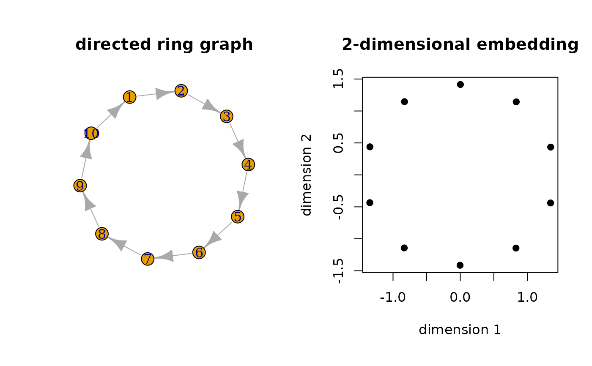

embed2007CYT.RdFind a low-dimensional embedding of the network given an asymmetric/directed graph. For simplicity, this function only accepts a network of \(\lbrace 0, 1 \rbrace \) binary edges.
embed2007CYT(graph, ndim = 2, alpha = 0.01)| graph | one of the followings; (1) an |
|---|---|
| ndim | an embedding dimension for a given graph (default: 2). |
| alpha | perturbation factor \(\in (0,1)\) (default: 0.01). |
a named list containing
an \((N\times ndim)\) matrix of embedded coordinates.
Chen M, Yang Q, Tang X (2007). “Directed Graph Embedding.” In Proceedings of the 20th International Joint Conference on Artifical Intelligence, IJCAI'07, 2707--2712. event-place: Hyderabad, India.
# \donttest{
## create a simple directed ring graph
library(igraph)
#>
#> Attaching package: ‘igraph’
#> The following object is masked from ‘package:T4network’:
#>
#> modularity
#> The following objects are masked from ‘package:stats’:
#>
#> decompose, spectrum
#> The following object is masked from ‘package:base’:
#>
#> union
mygraph = graph.ring(10, directed=TRUE)
## embed in R^2
embed2 = embed2007CYT(mygraph)$embed
## visualize the results
opar <- par(no.readonly=TRUE)
par(mfrow=c(1,2), pty="s")
plot(mygraph, main="directed ring graph")
plot(embed2, pch=19, main="2-dimensional embedding",
xlab="dimension 1", ylab="dimension 2")

par(opar)
# }